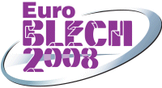

|
 03 - 06 Aralýk 2008 > EuroMold, World Fair for Moldmaking and Tooling, Design and Application Development 03 - 06 Aralýk 2008 > EuroMold, World Fair for Moldmaking and Tooling, Design and Application Development
Ülke / Þehir: Almanya /
Frankfurt
Yer: Messegelände Exhibition Center
The whole process chain "From Design to Prototyping to Series Production" is represented at EuroMold. A unique fair concept that closes the gap between industrial designers, product developers, producers, suppliers, and end-users. EuroMold shows methods for a quicker, more economical, and more efficient development and production of new products - a factor of increasing importance within the demands of the modern economy.
Since its beginnings in 1994, EuroMold has grown in exhibitors, in trade visitors, in internationality, in variety, in exhibition space, year after year. At EuroMold 2007, more than 65,000 trade visitors will be welcomed by around 1,700 exhibitors from Europe and abroad. Utilise EuroMold 2007 to access new international markets.
Daha
fazla bilgi için: www.euromold.com
04 - 07 Kasým 2008 > Midest 2008 - The world's leading industrial subcontracting show
Ülke / Þehir: Fransa / Paris
Yer: Paris Nord Villepinte Exhibition Centre
MIDEST is the world's largest show exclusively dedicated to industrial subcontracting and face to face meetings. By taking part in Midest 2008, you will benefit from the world's largest show exclusively dedicated to industrial subcontracting and to face to face meetings, with a unique and comprehensive range of exhibits, large media coverage and an incomparable venue, Paris, which is a real magnet for international customers.
- MIDEST: The world's leading industrial subcontracting show;
- 60 000 square metres of exhibition space,
- 1,805 exhibitors, including 679 foreign companies from 33 countries
- 31,367 trade professionals came from all around the world
- 14% of the customers are foreign and are drawn from 61 countries
- Customers from all industrial markets
MIDEST, comprehensive coverage:
- Metal Processing
- Screw Cutting, Machining, Special Machines
- Finishing, Surface Treatments, Thermal Treatments
- Industrial Fasteners
- Forging, Foundry, Fabrication
- Metal Cutting
- Semi-Finished Products
- Plastic/ Rubber /Composite Material Processing
- Electronics/Electricity
- Microtechniques
- Industry Services
- Engineering / Design / Research / Quality/ Services
- Industrial Maintenance
Daha
fazla bilgi için: www.midest.com
06 - 08 Kasým 2008 > ICRPM-BM 2008 Beijing > The 3rd International Conference on Rapid Prototyping and Manufacturing & The 2nd International Conference for Bio-manufactuing
Ülke / Þehir: Çin / Beijing
The Chinese Rapid Forming Technology Committee will organize ICRPM-BM'08 in Tsinghua University, Beijing, China, on November 6th-8th, 2008. This conference is composed of the 3rd Beijing International Conference on Rapid Prototyping and Manufacturing, the GARPA Summit and the 2nd International Conference for Bio-manufacturing.
For this Conference, the following topics are proposed for paper submission:
- Virtual Prototyping - 3D Digitizing (Sensors and Softwares) - Reverse Engineering - Tomography - Photogrametry - Data Modelling - Data Processing
- New Ttrends on RPM Technologies and Machines - New RP Processes - New RP materials
- Development of Rapid Prototyping and Rapid Product - Case Studies - Time Compression Experiences
- Rapid Manufacturing - Principles, New Developments of Technologies and Applications in Different Fields
- Rapid Tooling - Metallic Tools/Parts Manufacturing - Technologies and Case Studies
- Bio-Manufacturing - Organism Manufacturing - Biomaterials of RP - Medical Applications of RP
Exhibition: The Beijing Exhibition for RP Technologies and Machines will be hold in the same time. Some boothes are available for presentation of your applications.
GARPA's Annual Meeting: GARPA's Annual Meeting, Global Summit 2008 will be also hold in the same time.
Daha
fazla bilgi için:
www.icrpm08.org/en
29 - 30 Ekim 2008 > RPD (Rapid Product Development) Event; "Designing the Industry of the Future"
Ülke / Þehir: Portekiz / Oliveira de Azeméis
RPD 2008 - "Designing the Industry of the Future" will continue to open discussion on innovations in Product Development, RP&T and Rapid Manufacturing, presenting the latest research, developments and products related to the most important areas of Rapid Product Development.
RPD 2008 Organizing Committee invites you to contribute to this debate, submitting a paper on the following topics:
Product Development,
Rapid Prototyping,
Rapid Tooling,
Rapid Manufacturing,
CAD/CAE/Reverse Engineering,
Design Engineering,
Virtual Environments,
Concurrent Engineering,
Materials,
Production Technologies,
Innovation on Moulds,
Plastics Processing,
New Trends and Advanced Developments,
Applications
Programme (pdf)
Daha
fazla bilgi için: www.mouldsevent.com/364/rpd.html
 21
- 22 Ekim 2008 > TCT 2008 Conference and Exhibition; The Rapid Product Development & Rapid Manufacturing Event: 21
- 22 Ekim 2008 > TCT 2008 Conference and Exhibition; The Rapid Product Development & Rapid Manufacturing Event:
Ülke / Þehir: Ýngiltere / Coventry
Yer: Ricoh Arena
TCT is the only UK show focused on providing solutions for reducing time-to-market. This exclusive focus on Rapid Product Development and Rapid Manufacturing technologies stands TCT apart and it benefits from this unique position as the event to attend for the most up to date information in the RPD&RM sector.
TCT 2008 will take place on October 21/22, 2008 at the Ricoh Arena and will co-locate alongside MMLive 2008, a new exhibition for the Micro Manufacturing Industry.
The two events will bring together the latest developments in a wide range of technologies and will offer a one stop shop for engineers looking to source the latest solutions for design, development and manufacturing.
Daha
fazla bilgi için: www.tctshow.com
21 -25 Ekim 2008 > EuroBLECH 2008, 20th International Sheet Metal Working Technology Exhibition:
Ülke / Þehir: Almanya /Hannover
A clearly structured exhibition profile covers the entire sheet metal working technology chain:
- Sheet metal, tube, sections (ferrous and non-ferrous)
- Finished products, components, assemblies
- Handling
- Separation / Cutting
- Forming
- Flexible sheet metal working
- Tube / Section processing
- Machine elements
- Joining / Welding / Fastening
- Surface treatment of sheet metal
- Tools / Dies
- Controlling / Regulating / Measuring / Testing
- Quality assurance
- CAD/CAM systems / Data processing
- Factory and warehouse equipment
- Environment protection / Recycling
- Safety at work
- Research and development
Daha
fazla bilgi için: http://www.euroblech.de
Not: TÝAD'dan duyuru: EuroBLECH Sac Metal Ýþleme Fuarý'na birlikte gidelim...
http://groups.yahoo.com/group/TurkCADCAM/message/9543
09 - 10 Temmuz 2008 > Rapid Manufacturing; Third International Conference
Ülke / Þehir: Ýngiltere / Nottingham
Yer: Sir Dennis Rooke Conference Centre, Holywell Park, Loughborough University
Now in its third successful year, the International Conference on Rapid Manufacturing (RM) is one of the world's only conferences focused solely on the application of 'end use parts', made using additive layer manufacturing technologies. Hosted by the world leading "Rapid Manufacturing Research Group" at Loughborough University, the International Conference on RM is attended by over 150 delegates and speakers from around the world. The event provides a two day showcase of invited speakers, including the very best in both academic RM research activity and commercial RM applications. The event also plays host to a parallel technology and materials exhibition supported by leading RM systems vendors exclusively for conference delegates.
Programme:
The conference is aimed at both industrialists and academics. The conference will be equally of interest to those already involved in Rapid Manufacturing, but also those looking to engage with this exciting new technology. The conference will cover process and materials issues, design opportunities, management and organizational issues and industrial applications, making the conference of relevance to engineers, designers and business managers, as well as academics and researchers and RM materials and system developers
Daha
fazla bilgi için: www.rm-conference.com
16 - 19 Haziran 2008 > Canton Machine Tool Fair 2008 (GIMT 2008):
Ülke / Þehir: Çin / Guangzhou
Yer: China Import and Export Fair (Pazhou) Complex
GIMT 2008 will present itself as CANTON MACHINE TOOL FAIR. As the successor of the wellknown GIMT+AMB China, the event will be characterised by advanced concepts and will establish the GIMT as the meeting point of the entire machine tool industry in South China.
For the upcoming event, the organisers expect well over 500 exhibitors on a total area of 20,000 sqm at Guangzhou's state-of-the-art fairground.
Novelties of the Canton Machine Tool Fair 2008:
- An Open Forum invites leading companies of the industry to present technology innovations and product solutions to a professional audience.
- Speakers from international key players, research centres and trade associations will present latest developments and trends at the Canton Conference on Metal Cutting Technologies.
Daha
fazla bilgi için: www.canton-machinetool.com
04 - 07 Mart 2008 > IMATECH 2008 International Machinery Technologies Exhibition:
Ülke / Þehir: Ürdün, Amman
Yer: Amman International Motor Show Exhibition Hall (AIMS)
IMATECH 2008 International Machinery Technologies Exhibition - Uluslararasý Makine Teknolojileri Fuarý 3 yýldan beri hazýrlýklarý devam eden, Ürdün'ün en büyük sanayii fuarý olarak öngörülen ve yerli yabancý tüm endüstri firmalarýnýn ilgisini çeken ve her köþesinde kalite ve teknolojinin sergilendiði büyük ve baþarýlý bir Fuar olmayý amaçlayan bir etkinliktir. IMATECH 2008 Fuarý için dünyanýn her tarafýndan minimum 50 bin ziyaretçi beklenmektedir.
| Baþlýca sektörler: |
|
* Metal Ýþleme Makineleri
* Kalýp ve Otomotiv Teknolojileri
* Plastik ve Kauçuk Ýþleme Makineleri
* Otomotiv ve yedek parça
* Otomasyon Teknolojileri
* Kaynak Makineleri |
* Hidrolik ve Pnomatik
* Gýda ve Paketleme Makineleri
* Tarým Makineleri
* Ahþap Ýþleme Makineleri
* Tekstil Makineleri
* Ýþ ve Ýnþaat Makineleri |
Daha
fazla bilgi için:
|